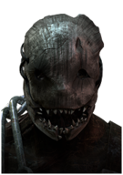
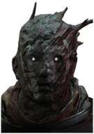
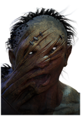
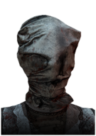
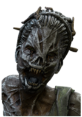
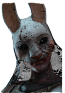

Убийцы

Охотник (англ. "The Trapper") — один из персонажей
игры Dead by Daylight в роли убийцы. Доступен для
выбора сразу после покупки основной игры. Настоящее
имя убийцы — Эван Макмиллан (англ. Evan Macmillan).
Убийца, способный контролировать карту, благодаря
установке Медвежьих капканов, в которые могут попасть выжившие.
Охотник
Но поскольку психическое здоровье Арчи Макмиллана медленно ухудшалось, Эван защищал его от людей, которые требовали свою долю. Независимо от того, что его отец просил сделать, Эван всегда это выполнял.
В скором времени Арчи Макмиллан совсем потерял рассудок, а его просьбы вышли за рамки дозволенного. В конце концов, из-за своего сумасшедшего отца Эван стал исполнителем жестокого массового убийства, ставшего самым известным убийством в новейшей истории. Он привёл более ста человек в темные тоннели и взорвал, оставив людей на произвол судьбы.
Рассказ о поместье Макмиллана является историей о благосостоянии и власти, которые уводят на плохой путь. Неизвестно число жертв, падших от рук отца и сына. Не осталось никаких записей о том, что стало с Эваном Макмилланом. А его отец — другая нерешённая загадка: его нашли в подвале собственного дома мёртвым, с раздробленными ногами и рядом лежащим тесаком[

Личные навыки

Нетерпимость

Зверская сила

Пугающее присутствие

Призрак (англ. "The Wraith") — один из персонажей игры Dead by Daylight в роли убийцы. Доступен для выбора сразу после покупки основной игры. Настоящее имя убийцы — Филипп Оджомо (англ. Philip Ojomo). Скрытный убийца, который может исчезнуть и снова появиться благодаря своему Плачущему колоколу.
Призрак
Все было хорошо, пока в один хмурый день, совершенно случайно, Филипп не увидел следы крови в одном из автомобилей, предназначенном для утилизатора. Он открыл багажник и нашел молодого человека с кляпом во рту, завязанными руками и паникой в глазах. Оджомо освободил человека, но он смог пробежать десять метров до его начальника, пока тот не остановил его и перерезал ему горло. Оджомо потребовал ответа и получил объяснение, что он был не более чем простым палачом, что почти в каждом автомобиле была "живая душа" — это была особая услуга для особенных "клиентов".
Оджомо переклинило, его разум пошел по наклонной. Он засунул своего начальника в утилизатор и пустил его медленно сжиматься, но последний высунул голову. Оджомо схватил её и вытянул череп и позвоночник из тела своего начальника. А затем Оджомо ушел, и никто его больше не видел

Личные навыки

Хищник

Ищейка

Детище тьмы

Деревенщина (англ. "The Hillbilly") — один из персонажей игры Dead by Daylight в роли убийцы. Доступен для выбора сразу после покупки основной игры. Настоящее имя убийцы — Макс Томпсон младший (англ. Max Thompson Jr.). Убийца с высокой мобильностью, который может быстро передвигаться на большие расстояния и сражать выживших с одного удара благодаря своей бензопиле.
Деревенщина
Дело было сделано. Он продолжал жить своей жизнью на ферме, вымещая свою непомерную жестокость на животных - ведь только так он мог почувствовать свободу. Наконец, освободившись от своих "оков" и обретя свободу, он побежал по кукурузному полю, преследуя и убивая всё живое, попадающееся ему на пути.
Тела Макса и Эвелин Томпсон так и не были найдены, зато по всей ферме находили замученных, выпотрошенных животных. Судьба фермы "Холодный ветер" быстро была решена — землю поделили и распродали. Но никто не хотел покупать сам дом. Возможно, они могли услышать на протяжении долгих и изнурительных летних ночей... Звук бензопилы?

Личные навыки

Умелец

Стойкий

Детище света

Медсестра (англ. "The Nurse") — один из персонажей игры Dead by Daylight женского пола в роли убийцы. Доступен для выбора сразу после активации бесплатного дополнения "Последний вздох". Настоящее имя убийцы — Салли Смитсон (англ. Sally Smithson). Быстрая и смертоносная убийца, которая может совершать скачки сквозь препятствия и резко сокращать дистанцию благодаря своей силе - Последний вздох Спенсера.
Медсестра
Эндрю работал лесорубом — работа со своими опасностями. И однажды начальник Эндрю нанес Салли визит, который навсегда изменил её жизнь. Возможно, произошел несчастный случай и Эндрю погиб, но история об этом умалчивает. Салли осталась одна. Без еды на своем столе. Единственным местом, где она смогла бы получить работу, была лечебница Кротус Пренн.
Никто не искал работу там, до тех пор, пока не появлялась острая необходимость. Точно так же было у Салли. Без какого-либо образования она начала со дна, и после двух десятилетий упорных трудов она так и не продвинулась вверх по карьерной лестнице. В конце концов её разум достиг своих пределов. Два десятилетия Салли видела ужасные вещи, происходившие на её глазах, воспоминания, наплывавшие каждую ночь. Оскорбленная словесно и физически психически больными людьми, Салли видела этот маразм со стороны, который в итоге сама и познала.
В конце концов, она не могла больше это терпеть, и внутри нее появилось собственное понятие очищения души. И она сделала то, что она чувствовала — то, что было необходимо.
Когда персонал вернулся в одно прекрасное сентябрьское утро, более пятидесяти мертвых пациентов были найдены в своих койках, холодные и безжизненные. Салли была единственной на сцене этого театра ужаса, угрожающе раскачиваясь взад и вперед. Что именно произошло, известно лишь ей одной, но кажется, что некоторые из них были задушены - на их шеях зияли следы от цепких огрубевших рук

Личные навыки

Стридор

Танатофобия

Зов медсестры

Ведьма (англ. "The Hag") — один из персонажей игры Dead by Daylight женского пола в роли убийцы. Становится доступным для выбора при выполнении одного из условий:
Ведьма
- Покупка платного DLC "Из плоти и грязи"
- Активация персонажа в магазине за 500 золотых клеток или 9000 радужных осколков
Они держали ее прикованной к стене в затопленном подвале. Сквозь мрак она могла видеть других жертв, чьи открытые раны сплошь кишели мухами. Они долго не выживали после того, как каннибалы начали высекать куски мяса из их тел ржавыми лезвиями, но Лизе удавалось упорствовать. Изглоданные и изуродованные, её худые руки выпали из оков. Она вытащила их, и металл проткнул кожу и мышцы, после чего она была свободна. Из её плоти сочился вязкий жёлтый гной, и кости были видны под гангреной раны. Она не могла идти дальше. В бреду она думала о доме; она думала о старейшинах. Она следовала по символам, которым они её обучили. Темный голод пробирал само ее естество. Она жаждала крови. Она выбрала мщение.
Полицейский обыск в конце концов привел к старому дому в болоте. Его жители были расчленены и сожраны. Символы амулетов старейшин были нацарапаны в крови на полу, а тело Лизы так никогда и не было найдено

Личные навыки

Порча: Пожирание надежды

Порча: третья печать

Порча: погибель

Охотница (англ. "The Huntress") — один из персонажей игры Dead by Daylight женского пола в роли убийцы. Доступен для выбора сразу после активации бесплатного дополнения "Колыбельная для темноты". Настоящее имя убийцы — Анна, фамилия неизвестна. Убийца, которая может поражать выживших на расстоянии, бросая охотничьи топоры.
Охотница
Как-то Анна со своей матерью выслеживали гигантского лося в чаще. Они знали, что животное это - крайне опасное, но особенно холодная зима и скудные запасы пищи заставляли их рисковать. Страх перед смертью от голода был сильнее ужаса от любого лесного обитателя. Без какого-либо предупреждения огромный лось взревел и бросился на Анну. Ее парализовал страх, а весь мир будто задрожал под копытами этого поистине адского жителя леса. Лось был настолько близко, что Анна могла разглядеть животную ярость в его глазах. Именно в этот момент между ними появилась мать с топором в руке. С ее губ сорвался крик, от которого кровь стынет в жилах, когда лось поднял мать на своих исполинских рогах в воздух. И пока тот пытался стрясти человека, она раз за разом вонзала топор в голову зверя. С ужасающим хрустом рога лося сломались и мать Анны была на свободе. Зверь пал.
Анна была еще слишком мала, чтобы самой оттащить искалеченное тело матери домой, поэтому девочка осталась сидеть с ней на опушке, где произошло сражение. Чтобы отвлечь Анну от ужасных предсмертных хрипов лося, мать обняла ее и напевала дочери ее любимую колыбельную. Так они и лежали, пока тела лося и матери полностью не охладели, а Анна осталась в полной тишине, одна в лесу. В конце концов она поднялась и направилась к дому.

Личные навыки

Хищный зверь

Порча: колыбельная охотницы

Территориальный императив
Dead By Daylight
Контакты:
Помощь:
предложения отправлят сюда
@mail: dbd-help@mail.ru
D
E
A
D
E
A
D
B
Y
Y
D
A
Y
L
I
G
H
T
A
Y
L
I
G
H
T